Schule Nummer 12 mit erweitertem Deutschunterricht Perm
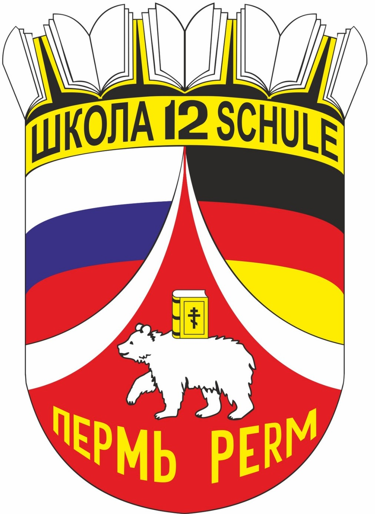
Digitale Ferien 25
Was ist das AVASA?
Name unserer Mannschaft ist A V A S A.Was bedeutet eigentlich A V A S A ?
А - Aktiv
V - Vielseitig
A - allgemein
S - Spannend
A - aufmerksam
Jetzt möchten wir unser Werk präsentieren. Unser Team besteht aus Schülern der Schule Nr. 12 mit erweitertem Deutschunterricht, das sind 6 Schüler und eine Lehrerin.
Teilnehmer
Alina Luneva
Vasilii Kulakov
Alexey Oborin
Anna Merkurjewa
Sascha Zotin
Lehrer
Vershinina Elena Viktorovna
Unser Digi-Essen-Wörterbuch
Fruchtiges
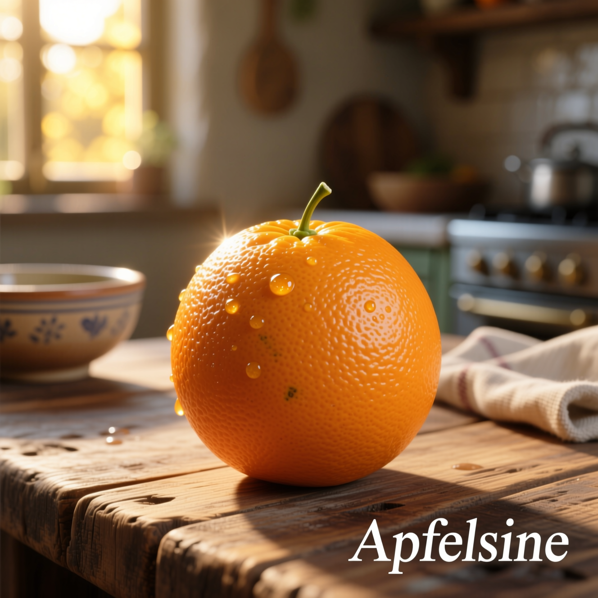
Grammatik:
Substantiv (Femininum)
Nominativ Plural: Apfelsinen
Genitiv Singular: Apfelsine
Worttrennung: Ap-fel-si-ne Bedeutung: orangefarbene, kugelförmige und sehr saftreiche Südfrucht, Orange Beispiel: eine Apfelsine schälen
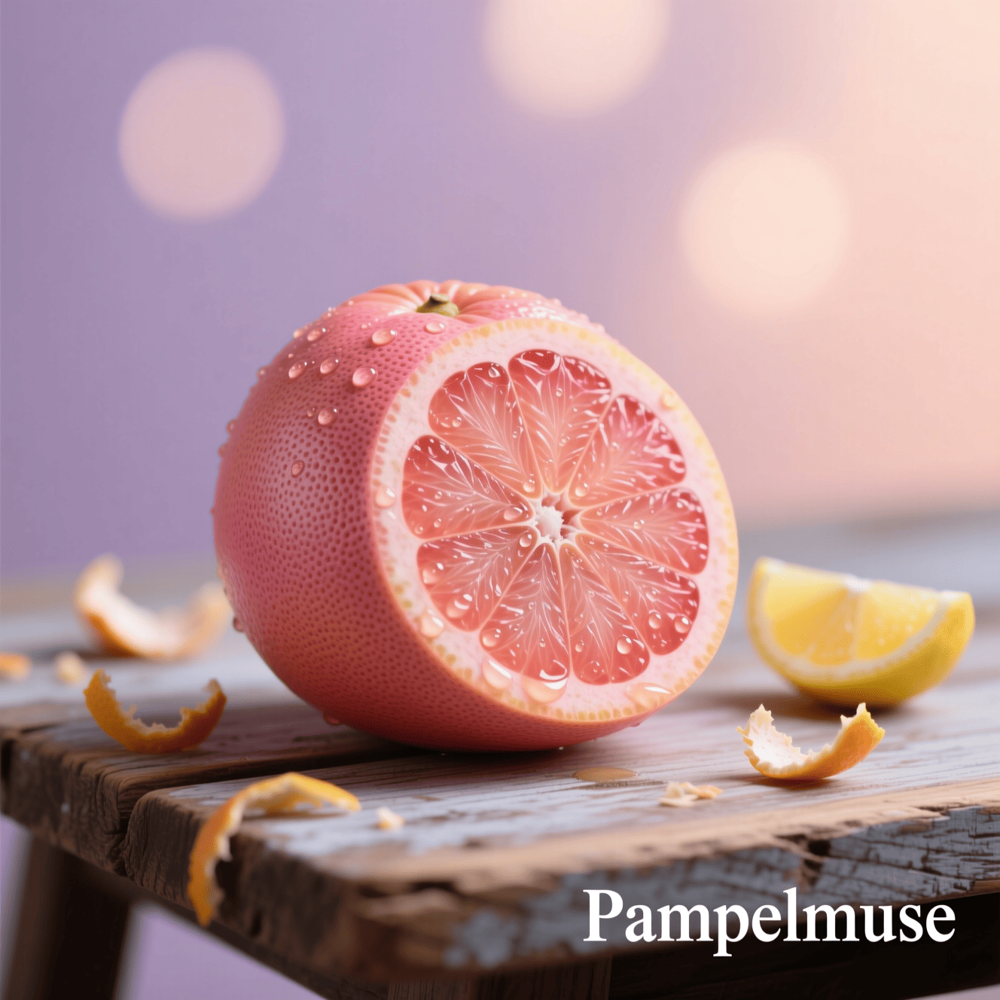
Grammatik:
Substantiv (Femininum)
Nominativ Plural: Pampelmusen
Genitiv Singular: Pampelmuse
Worttrennung: Pam-pel-mu-se Bedeutungen:
in Südasien beheimateter, zu den Zitrusgewächsen gehörender Baum mit großen,
breit geflügelten Blättern und großen weißen Blüten
große, zitronenähnliche, tropische Frucht von 1 mit säuerlich bitterlichem Geschmack, Grapefruit
Nebenform (mundartlich) —
Grammatik:
Substantiv (Femininum)
Nominativ Plural: Flederbeeren (wird meist im Plural verwendet)
Genitiv Singular: Fliederbeere/Flederbeer
Worttrennung: Flie-der-bee-re/Fle-der-beer Bedeutung:
meist D-Nordwest , D-Nordost Synonym zu Holunderbeere Beispiel:
Im Herbst zogen die Hamburger zu den Knicks (= Hecken) der Umgebung und pflückten Fliederbeeren. [Hamburger Abendblatt, 17.09.2020]
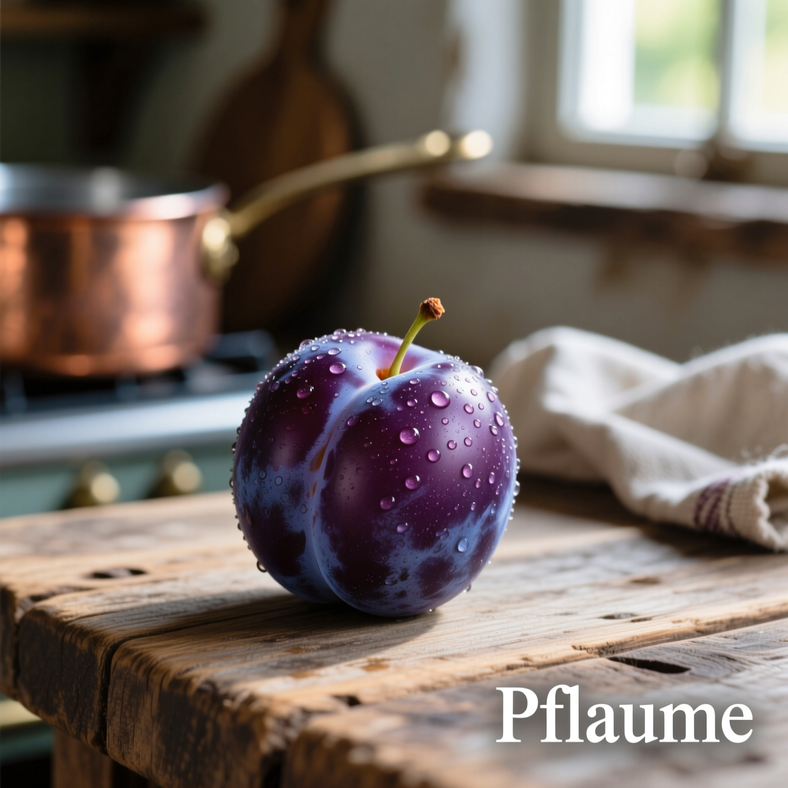
Grammatik:
Substantiv (Femininum)
Nominativ Plural: Pflaumen
Genitiv Singular: Pflaume
Worttrennung: Pflau-me Bedeutungen:
Frucht des Pflaumenbaums
spezieller (große) kugelige Frucht des Pflaumenbaums,
deren Fruchtfleisch sich schwer vom Stein lösen lässt
Synonym zu Edelpflaume
spezieller, besonders D-Nordost, D-Nordwest, D-Mittelost,
D-Mittelwest ovale, blauviolette bis schwarze Frucht des Pflaumenbaums
(Frucht der Unterart Prunus domestica domestica)
Synonym zu Zwetschge (1), Zwetsche, Zwetschke, ²Quetsche
salopp, Schimpfwort Person, die (immer wieder) versagt, wenig leistet oder der man nichts zutraut
Synonym zu Flasche (2), Versager (1)
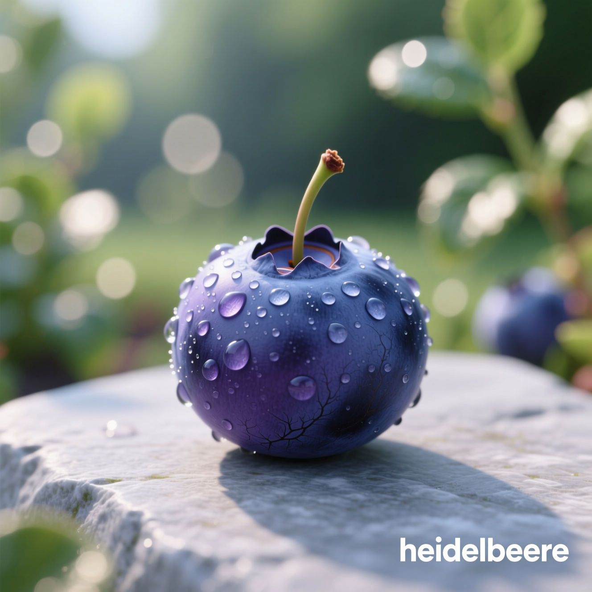
Grammatik:
Substantiv (Femininum)
Nominativ Plural: Heidelbeeren
Genitiv Singular: Heidelbeere
Worttrennung: Hei-del-bee-re Bedeutungen:
in Südasien beheimateter, zu den Zitrusgewächsen gehörender Baum mit großen,
breit geflügelten Blättern und großen weißen Blüten
große, zitronenähnliche, tropische Frucht von 1 mit säuerlich bitterlichem Geschmack, Grapefruit
Worttrennung: Re-ne-klo-de / Re-nek-lo-de / Rei-ne-clau-de Bedeutungen:
meist D-Südwest , D-Mittelwest , CH Synonym zu Ringlotte, Ringlo
Pflaumenbaum der Unterart Prunus domestica italica
kleine, runde, süße Frucht der Reneklode, die meist grün,
manchmal auch gelbgrün oder rotgrün
ist und deren Fruchtfleisch sich schlecht vom Stein lösen lässt
Gemüse
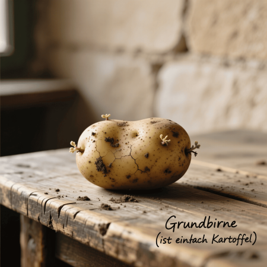
Grammatik:
Substantiv (Femininum)
Nominativ Plural: Grundbirnen
Genitiv Singular: Grundbirne
Worttrennung: Grund-bir-ne Bedeutung: Regional für Kartoffel. Wörtlich: "Erdbirne".
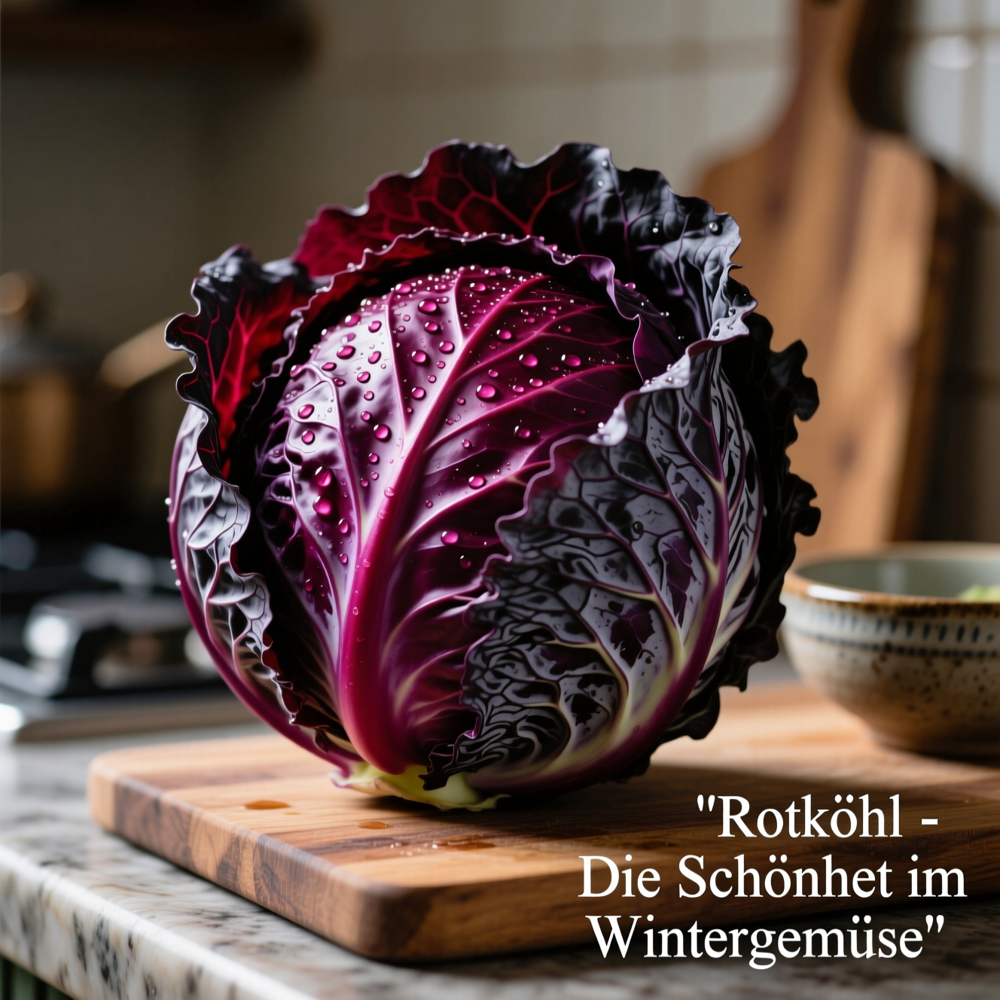
Grammatik:
Substantiv (Maskulinum)
Nominativ Plural: Rotkohle (seltener: Rotkohls)
Genitiv Singular: Rotkohls
Worttrennung: Rot-kohl Bedeutung: Kohlgemüse mit roten/violetten Blättern.
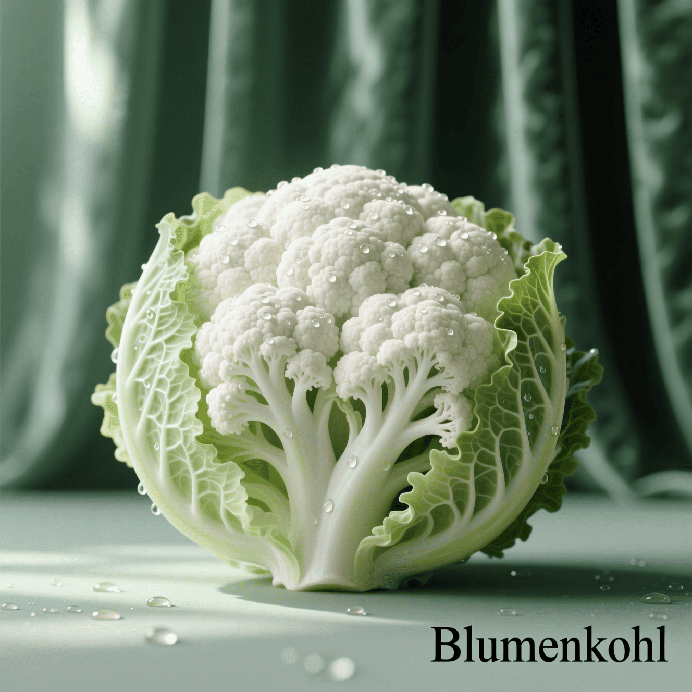
Grammatik:
Substantiv (Maskulinum)
Nominativ Plural: Blumenkohle (auch: Blumenkohls)
Genitiv Singular: Blumenkohls
Worttrennung: Blu-men-kohl Bedeutung: Kohlgemüse mit weißem, "blumenartigem" Kopf.
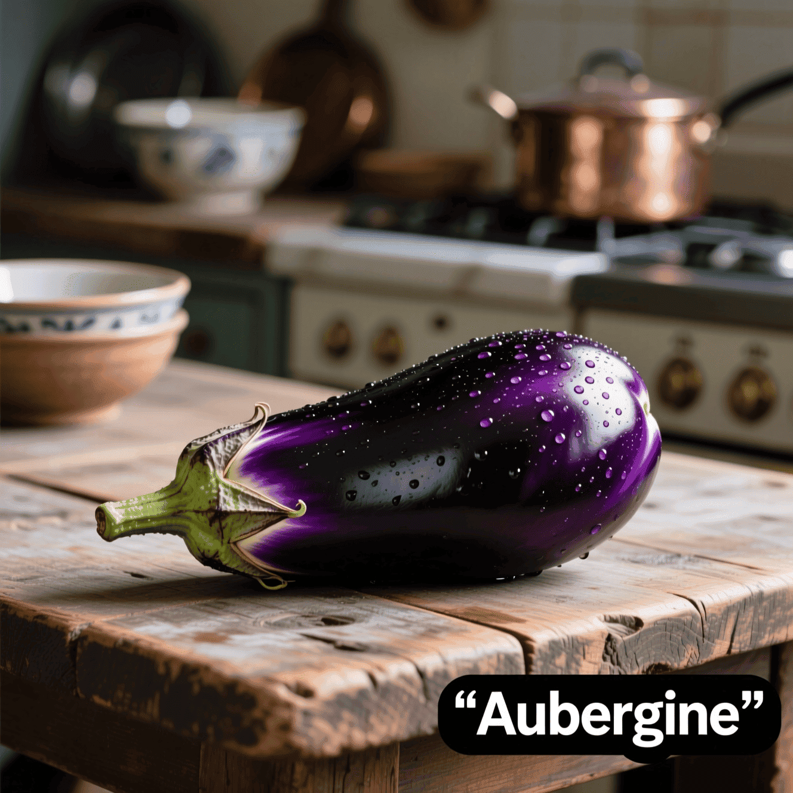
Grammatik:
Substantiv (Femininum)
Nominativ Plural: Auberginen
Genitiv Singular: Aubergine
Worttrennung: Au-ber-gi-ne Bedeutung: Nachtschattengewächs mit lila Frucht. Auch Eierfrucht genannt.
Worttrennung:Plätz-chen Bedeutung: kleines, süßes, oft flaches Stück Gebäck,
das vor allem in der Vorweihnachtszeit in vielen unterschiedlichen Sorten
meist selbst gebacken oder von Bäckern zum Verkauf angeboten wird. Kollokationen: mit Adjektivattribut: leckere, selbstgebackene Plätzche
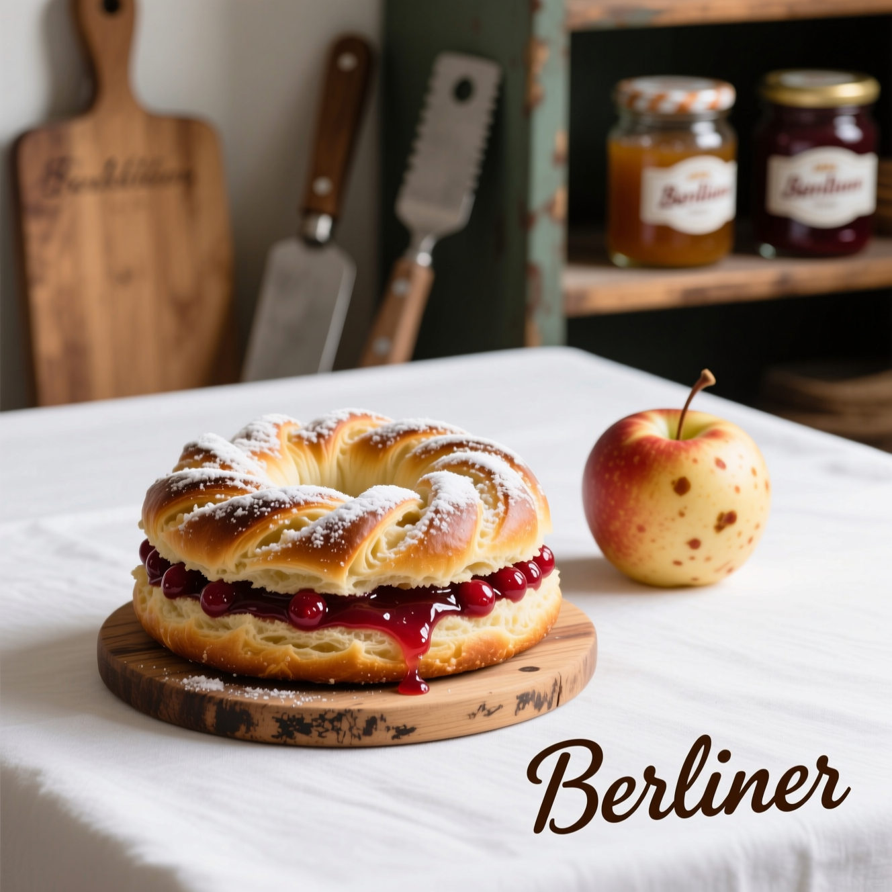
Grammatik:
Substantiv (Maskulinum)
Nominativ Plural: Berliner
Genitiv Singular: Berliners
Worttrennung: Ber-li-ner Bedeutung: kleines, rundes,
in Fett gebackenes süßes Gebäck aus Hefeteig mit unterschiedlichen Füllungen (besonders Marmelade)
Synonym zu Krapfen (2), Pfannkuchen (1)
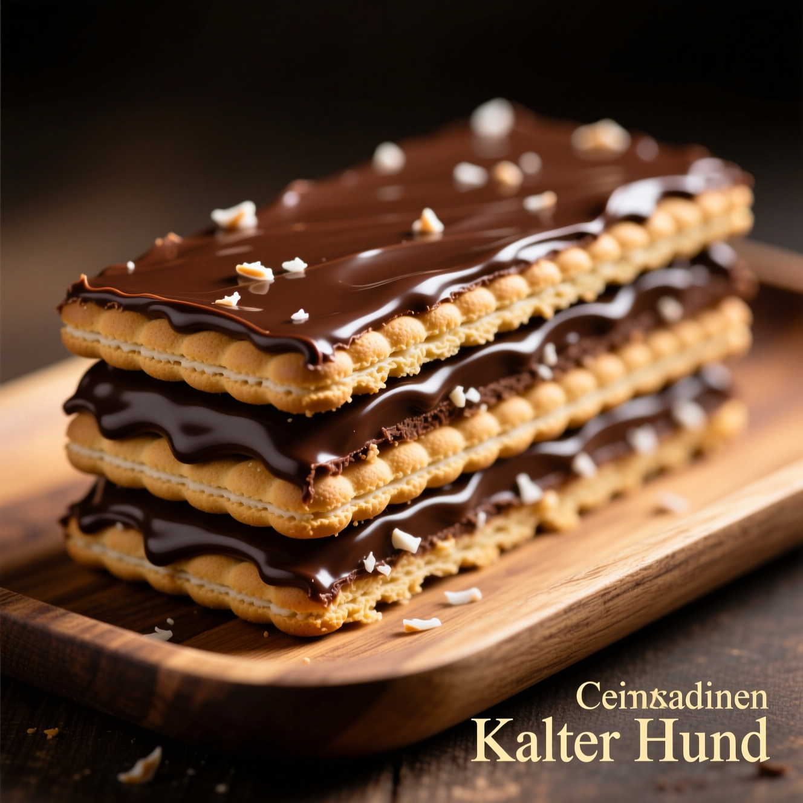
Kalter Hund
Grammatik: Mehrwortausdruck
Bedeutung: kuchenartige Süßspeise,
für deren Zubereitung geschichtete Butterkekse mit einem Gemisch aus Schokolade und Kokosfett überzogen werden.
/
Grammatik:
Substantiv (Maskulinum/Femininum)
Nominativ Plural: Plunder(n)
Genitiv Singular: Plunders/Plunder
Worttrennung: Plun-der Bedeutung: oft fachsprachlich kleines Gebäckstück aus Plunderteig (https://www.dwds.de/wb/Plunderteig)
Beispiele:
Plunder und Hefegebäck soll es geben, Stückchen,
die auch Kindern und Senioren schmecken. [Allgemeine Zeitung, 29.11.2019].
Getränke
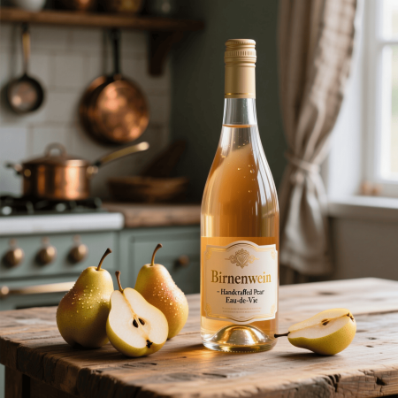
Grammatik:
Substantiv (Maskulinum)
Genitiv Singular: Birnenwein(e)s
Nominativ Plural: Birnenweine
Worttrennung: Bir-nen-wein
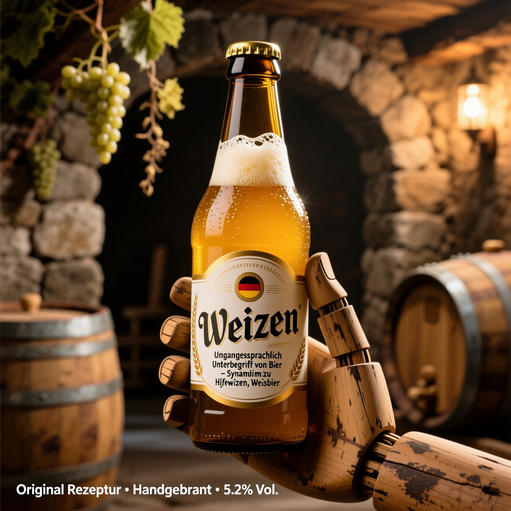
Grammatik:
Substantiv (Neutrum)
Genitiv Singular: Weizens
Nominativ Plural: Weizen
Worttrennung: Wei-zen Bedeutung: umgangssprachlich Unterbegriff von Bier (1),
Synonym zu Weizenbier, Hefeweizen, siehe auch Weißbier Beispiele:
Wenn Alkohol, dann ein Weißbier (Weizen), weil es alle Vitamine und Spurenelemente enthält,
die wir brauchen. [Bild, 07.08.2008]
anregendes, aromatisches Getränk aus gemahlenen Kaffeebohnen Beispiele:
Kaffee (auf)brühen, kochen
gehoben Kaffee bereiten
ich mache uns noch einen Kaffee
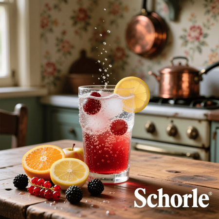
Grammatik:
Substantiv (Femininum)
Genitiv Singular: Schorle
Plural: Schorlen
Worttrennung: Schor-le Bedeutung: Ein Mischgetränk aus Wein oder Saft mit Sprudelwasser
(z.B. Apfelschorle, Weinschorle).
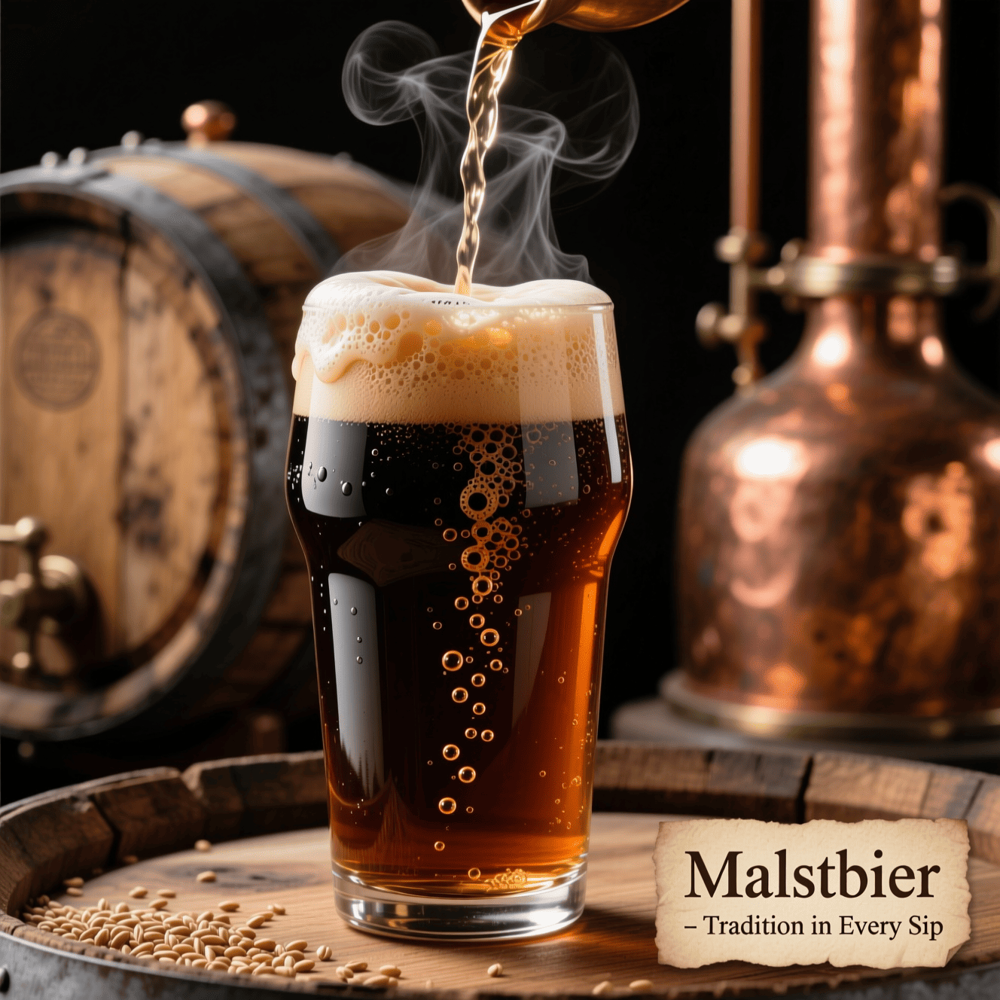
Grammatik:
Substantiv (Neutrum)
Genitiv Singular: Malzbier(e)s
Plural: Malzbiere
Worttrennung: Malz-bier Bedeutung: Ein dunkles, süßes, nur schwach alkoholisches
oder alkoholfreies Bier, das aus Malz hergestellt wird.
Geschirr
Grammatik:
Substantiv (Neutrum)
Genitiv Singular: Schnapsglases
Plural: Schnapsgläser
Worttrennung: Schnaps-glas Bedeutung: Ein kleines, kelch- oder zylinderförmiges Glas,
in dem Spirituosen (Schnaps) serviert werden.
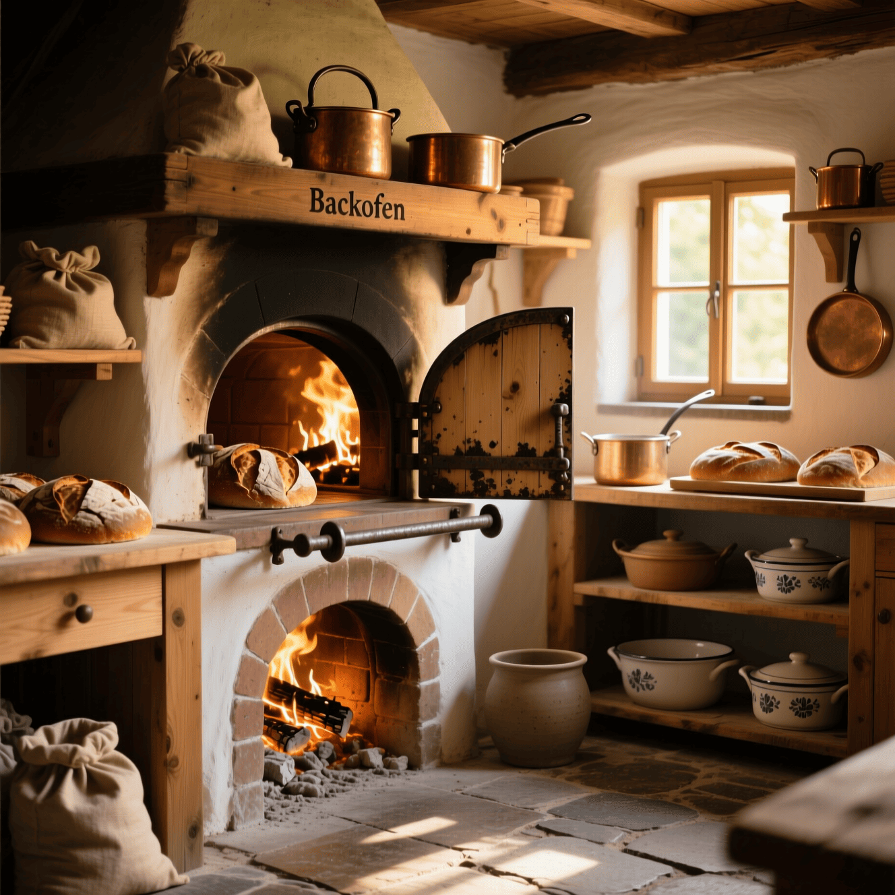
Grammatik:
Substantiv (Maskulinum)
Genitiv Singular: Backofens
Plural: Backöfen
Worttrennung: Back‧ofen Bedeutung: Ein geschlossenes Gerät oder
eine Vorrichtung zum Backen, Grillen oder Garen von Speisen.
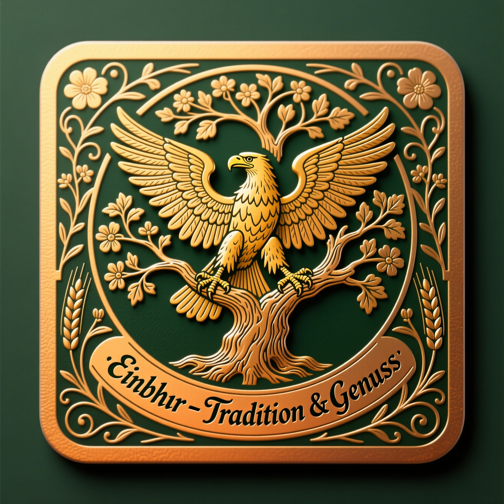
Grammatik:
Substantiv (Maskulinum)
Genitiv Singular: Bierdeckels
Plural: Bierdeckel
Worttrennung: Bier-de-ckel Bedeutung: Ein saugfähiger Papp- oder Pappelrundschnitt, der unter Biergläsern platziert wird,
um die Tische vor Feuchtigkeit zu schützen.
Grammatik:
Substantiv (Maskulinum)
Genitiv Singular: Pott(e)s
Plural: Pötte (im Sinne von Töpfen)
Worttrennung: Pott (Das Wort ist eine Silbe und wird nicht getrennt) Bedeutung:
(Norddeutsch) Topf oder Gefäß.
Umgangssprachlich für ein Gefäß oder ein Lokal (z.B. "einen Pott Kaffee").
Grammatik:
Substantiv (Maskulinum)
Genitiv Singular: Tellers
Plural: Teller
Worttrennung: Tel-ler Bedeutung: Ein saugfähiger Papp- oder Pappelrundschnitt, der unter Biergläsern platziert wird,
um die Tische vor Feuchtigkeit zu schützen. Eine flache, meist runde Platte, von der gegessen wird.